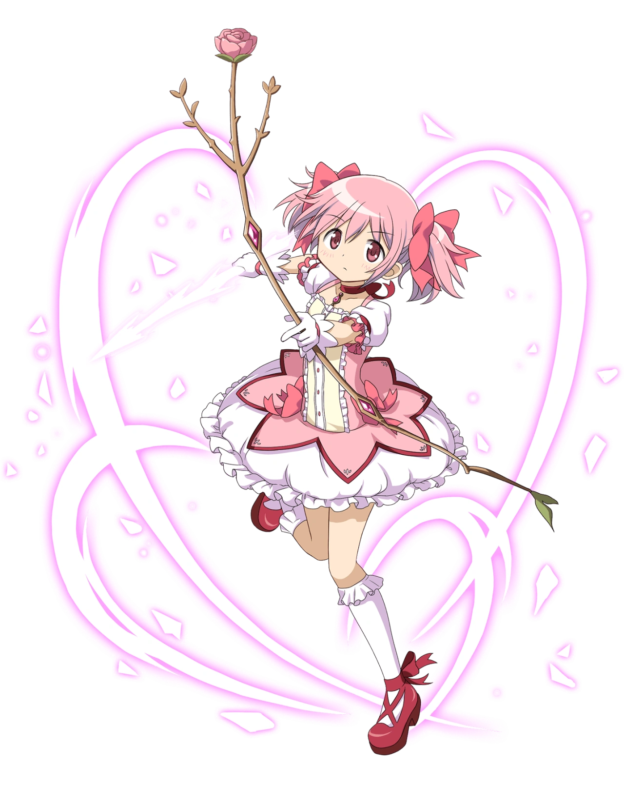
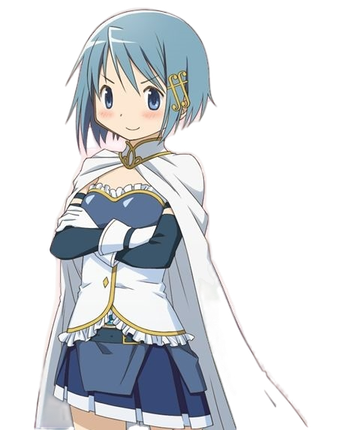
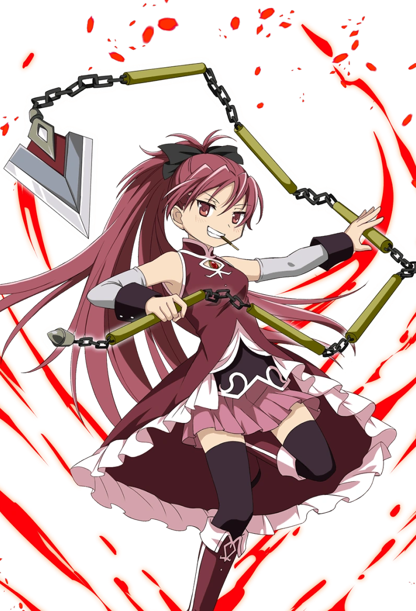
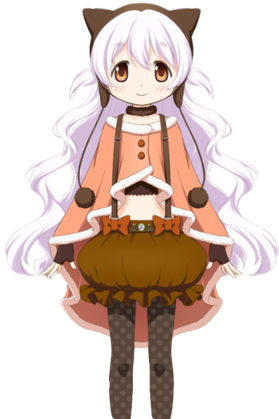
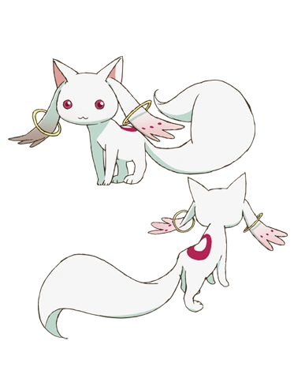
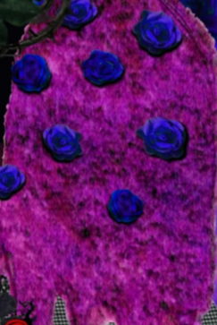

Homura Akemi ほむら
Homura Akemi (暁美ほむら?) is one of the five main Magical Girls in Puella Magi Madoka☆Magica anime.
info

Madoka Kaname まどか
Madoka Kaname (鹿目まどか?) is one of the five main Magical Girls and the title character of Puella Magi
info

Sayaka Miki さやか
Sayaka Miki (美樹さやか?) is one of the five main Magical Girls in Puella Magi Madoka☆Magica anime.
info



Kyubey (キュゥべえ?)
Kyubey (キュゥべえ?), also known as the Messenger of Magic (魔法の使者?), is a cat-like creature featured in Puella Magi Madoka☆Magica anime
info

Witches (魔女?)
The Witches (魔女?) are primary antagonists featured in the Puella Magi Madoka☆Magica franchise.
info